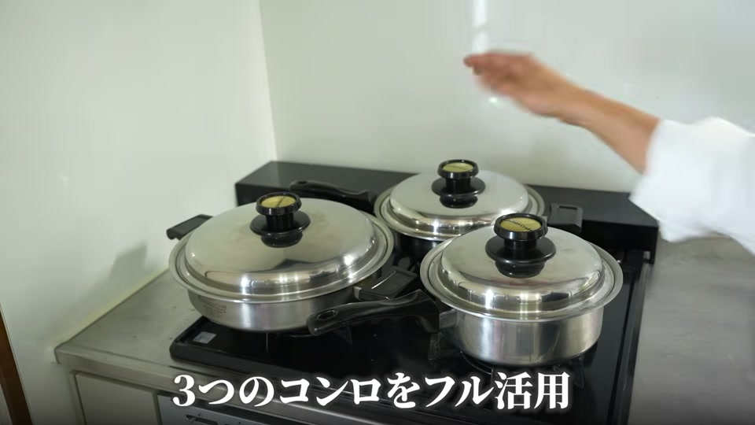
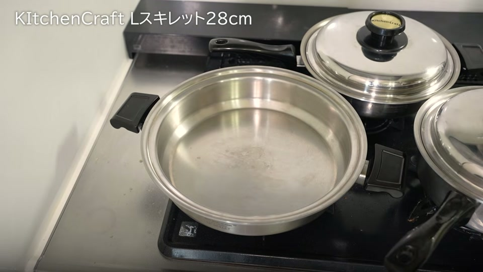
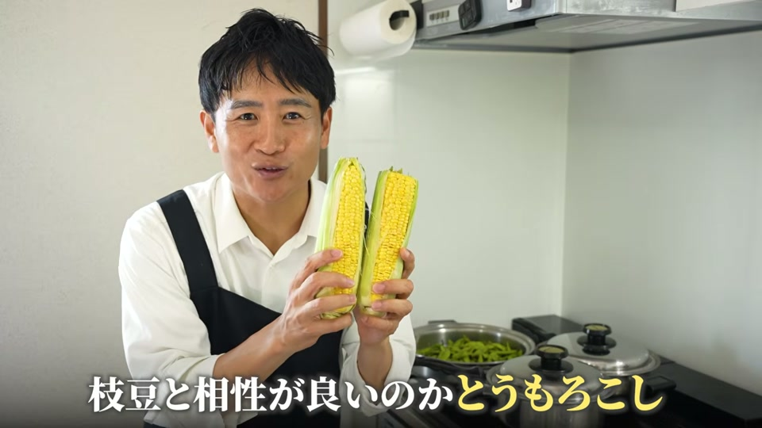
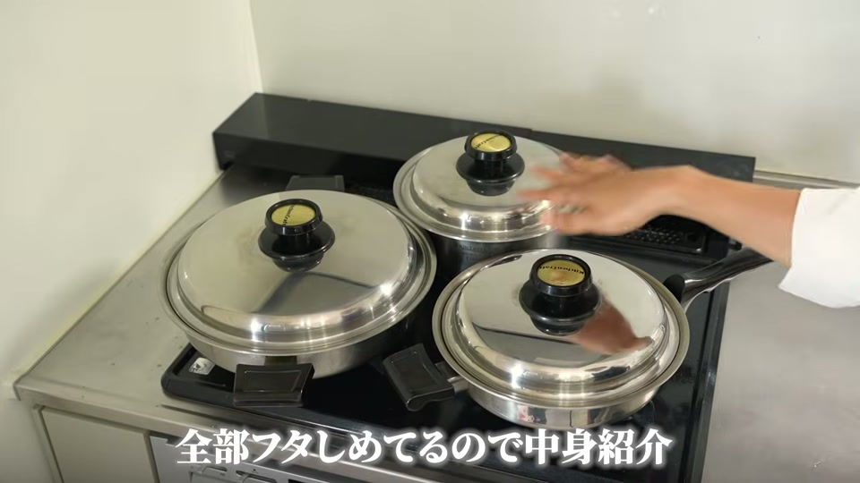
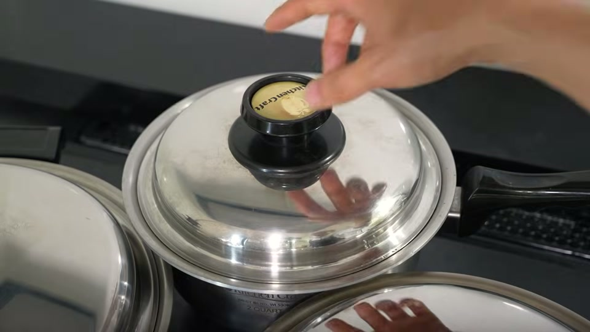
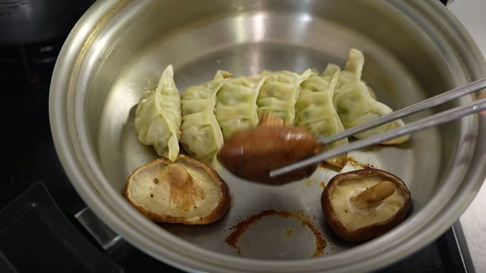

結論からお伝えすると、ステンレス鍋を使えば、包丁やまな板を一切使わずに材料を入れて火にかけるだけの「ほったらかし調理」で、美味しいおつまみが同時に一気で作れます。
ステンレス鍋は高い熱伝導性とすぐれた密閉性・保温性を備えているため、食材本来の旨みを引き出す蒸し煮や煮込みが得意です。火の前に立ち続ける必要がないため、忙しい家事の合間や暑い季節でもストレスなく手軽に本格的なおつまみを完成させることができます。
この記事では、ステンレス鍋を活用して包丁・まな板なしで作る簡単なおつまみ5品のレシピと、美味しく仕上げるコツをわかりやすく解説します。
ステンレス鍋は「ほったらかし調理」に最適な万能調理器具

「せっかくステンレス鍋を買ったのに、使いこなせていない」とお悩みの方も多いのではないでしょうか。
実は、ステンレス鍋こそ「手間を減らしたい」「手早く美味しいものを作りたい」という方にぴったりの調理器具です。
- すぐれた熱伝導性と密閉性：鍋全体に均一に熱が伝わり、蓋をすることで蒸気を閉じ込めます。
- 少ない水と熱量で調理可能：旨みや栄養分が外に逃げず、素材本来の美味しさが凝縮されます。
- 火にかけたら放置でOK：一度加熱してしまえば、あとは弱火にしてほったらかしておくだけで料理が完成します。
包丁・まな板不要！ほったらかしおつまみ5品の作り方

今回ご紹介する5品のおつまみは、包丁やまな板を使いません。ステンレス鍋に入れるだけで同時に作れるため、洗い物も最小限で済みます。
| 料理名 | 使用する主な道具・調理方法 | 特徴 |
|---|---|---|
| 鶏手羽先の甘辛煮 | 深型鍋（2コート等） / 煮込み | 調味料3つのみ。照り良く仕上がる |
| 蒸し枝豆 | 浅型鍋・スキレット / 少量の水で蒸し煮 | 茹でるより旨みとビタミンが残る |
| 蒸しトウモロコシ | 枝豆の上に重ねて同時調理 | 枝豆と一緒に蒸すことで甘みが引き立つ |
| チルド餃子 | スキレット / 冷たい鍋から弱火調理 | 焦げ付かずにカリッと香ばしく焼ける |
| 焼き椎茸 | 餃子の空きスペースで同時調理 | 餃子の油と蒸気でしっとり美味しく焼ける |
1. 鶏手羽先の甘辛煮
- 鶏手羽先を50度洗いします。
- 鍋に手羽先を入れ、みりん・醤油・酒を「3：2：1」の割合で加えます。
- 中火にかけ、沸騰したら弱火にして蓋をし、煮込みます（途中でアク取りをする必要はありません）。
2 & 3. 蒸し枝豆 ＆ 蒸しトウモロコシ（同時調理）
- 鍋に枝豆を入れ、水150mlを加えます。
- その上にトウモロコシ（手で割ったものなど）を重ねて乗せ、蓋をします。
- 火にかけ、沸騰したら弱火にして約7分加熱すれば、甘みが凝縮された蒸し野菜が2品同時に完成します。
4 & 5. チルド餃子 ＆ 焼き椎茸（同時調理）
- 冷たい状態の鍋（スキレット）に油を引き、チルド餃子を並べます。
- 空いているスペースに軸を取った椎茸を並べます。
- 蓋をして弱火にかけ、蒸気が出るまでじっくり加熱します。焦げ付くことなく綺麗な焼き色がつきます。
ステンレス鍋の美味しさを引き出す3つのコツ

ほったらかし調理でより美味しい料理に仕上げるために、以下のポイントを押さえておきましょう。
1. 少ない水量で蒸し焼きにする
枝豆やトウモロコシなどを調理する際、たっぷりのお湯で茹でる必要はありません。ごく少量の水（150ml程度）で蒸し煮にすることで、ビタミンや旨みが水に溶け出さず、素材の甘みが際立ちます。
2. 餃子は冷たい鍋から弱火で加熱する
ステンレス鍋で焼き物をする際、冷たい状態の鍋に油と食材（餃子や椎茸）をセットしてから弱火でじっくり温めることで、食材が鍋にくっついたり焦げ付いたりするのを防ぐことができます。
3. 上質な調味料を使用する
包丁を使わずシンプルな工程で作るからこそ、使う調味料の品質が味を大きく左右します。熟成された本みりんやこだわりの醤油などを使うと、調味料の数が少なくても深みのある味わいに仕上がります。
調理の合間に家事も進む！複数コンロの効率的な活用法
ステンレス鍋を使ったほったらかし調理の最大のメリットは、「火にかけるまでの仕込みが数分で終わり、加熱中は完全に手が空くこと」です。
ご家庭に複数のコンロがある場合、3つの鍋を使って「手羽先の煮物」「蒸し野菜」「焼き餃子・椎茸」を同時に火にかければ、約10分〜15分の加熱時間の間に晩酌の準備を整えたり、他の家事を済ませたりできます。
火の前に立ち続けてかき混ぜたり裏返したりする必要がないため、キッチンにこもるストレスから解放されます。
よくある質問（FAQ）

Q. ステンレス鍋で枝豆を茹でるとき、水はどれくらい必要ですか？
A. たっぷりのお湯を沸かす必要はありません。水150ml程度の少量で蒸し焼きにすることで、旨みやビタミンが水に溶け出さず、濃密な味わいに仕上がります。
Q. ステンレス鍋で餃子を焼くと焦げ付きませんか？
A. 冷たい状態の鍋に油を引き、餃子を並べてから蓋をして弱火でじっくり加熱してみてください。蒸気が十分に出てから火を止めることで、焦げ付かずに綺麗に剥がすことができます。
Q. ほったらかし調理中にアク取りはしなくていいですか？
A. ステンレス鍋で蓋をして弱火加熱する場合、急激な沸騰が起きないためアクが出にくくなります。アク取りをしなくても臭みが残りにくく、美味しく仕上がります。
動画で紹介されているアイテム・サービス

動画内で使用・紹介されたステンレス鍋や調味料、関連グッズは以下の通りです。
- キッチンクラフト（スキレット・2コート鍋）
- 大澤チャンネルオリジナル商品サイト
- 置き型浄水器 Re
- 国産置き型浄水器 beaq
- 予算1万円のおすすめお鍋
- 予算2万円のおすすめお鍋
- ヘンケルス オールステンレス包丁
- 後ろでネジが回せる頑丈な大さじ
- ピッチャー型浄水器リセラ
- スリムなホイッパー
- 取り外せる優秀なキッチンばさみ
- 岐阜の3年みりん
- 安全で美味しいしょうゆ
- 美濃三年酢
- ピンクの塩
- スタイリッシュなピーラー
- 安全なステンレスケトル
- 内窯ステンレスな炊飯器
- 酵素玄米炊飯器
- 楽天ROOM（おすすめグッズ一覧）
- ステンレス鍋の中古品販売サイト
まとめ：ステンレス鍋を使いこなしてストレスフリーな料理ライフを

ステンレス鍋は、その高い保温性と密閉性を活かすことで、「包丁を使わない」「水も少量」「火にかけたら放置」という圧倒的に手間のかからない調理を可能にしてくれます。
手羽先の煮物や少量の水で蒸す枝豆、冷たい鍋からじっくり焼く餃子など、少しの工夫で仕上がりも味も格段にアップします。後片付けも簡単なステンレス鍋のほったらかしレシピを、ぜひ日々の献立やおつまみ作りに取り入れてみてください。